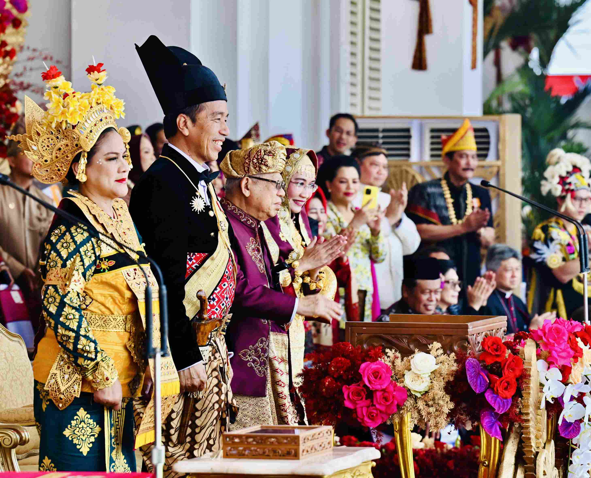

Kumpulan cerita budaya dari seluruh Nusantara

Indonesia, sebagai negara dengan keanekaragaman budaya yang kaya, sering kali menjadi sorotan dalam perbincangan masyarakat. Perkembangan zaman dan globalisasi membawa tantangan tersendiri terhadap pemertahanan budaya. Artikel ini membahas permasalahan budaya di Indonesia dari beberapa aspek, sekaligus menggali solusi untuk menjaga keberagaman budaya sebagai identitas bangsa.
Perkembangan teknologi dan arus informasi yang semakin cepat membawa dampak signifikan terhadap budaya lokal. Masyarakat lebih mudah terpapar budaya luar melalui media sosial, film, dan musik, sehingga keberlangsungan budaya lokal dapat terancam. Pancasila sebagai dasar negara berperan penting sebagai penyaring nilai-nilai baru.
Taufanto (2017) menyatakan bahwa “Pancasila akan menilai sesuatu yang dapat diserap untuk disesuaikan dengan nilai-nilai Pancasila.” Nilai-nilai baru tersebut kemudian membentuk karakter masyarakat Indonesia.
Bangsa Indonesia harus melestarikan Pancasila sebagai pedoman hidup sekaligus menjadikannya landasan perdamaian dalam menghadapi dampak globalisasi. Setiap bangsa membutuhkan pedoman yang jelas untuk berdiri teguh dan memahami tujuan yang harus dicapai.
Pendidikan memiliki peran sentral dalam pemertahanan budaya di Indonesia. Tantangan muncul ketika integrasi nilai budaya lokal ke dalam sistem pendidikan semakin sulit akibat pengaruh norma global. Upaya penguatan peran pendidikan diperlukan agar tidak hanya menyampaikan pengetahuan umum, tetapi juga memperdalam pemahaman terhadap budaya masyarakat.
Suparman (2020) menekankan perlunya pengembangan kurikulum yang menanamkan nilai budaya sejak dini. Integrasi pengetahuan lokal ke dalam kurikulum nasional dapat membentuk generasi dengan pemahaman mendalam terhadap budaya sendiri.
Pemerintah memiliki peran penting dalam menjaga keberlanjutan budaya melalui kebijakan dan program strategis. Revitalisasi seni tradisional, pendanaan komunitas seniman, serta promosi budaya di tingkat nasional dan internasional perlu terus diperkuat.
Permasalahan budaya di Indonesia tidak dapat diabaikan. Upaya bersama masyarakat, pemerintah, dan lembaga pendidikan sangat diperlukan untuk menjaga keberagaman budaya sebagai kekayaan bangsa.
Langkah konkret seperti regulasi berkelanjutan, kurikulum pendidikan inklusif, dan dukungan pemerintah dapat memperkuat pemertahanan budaya, sejalan dengan semangat Bhinneka Tunggal Ika.